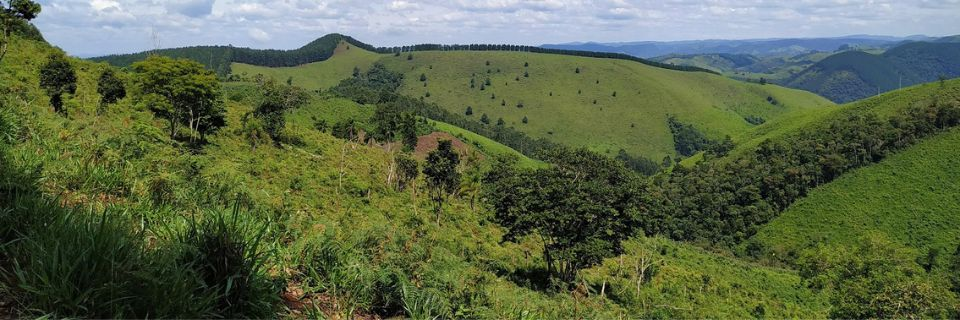
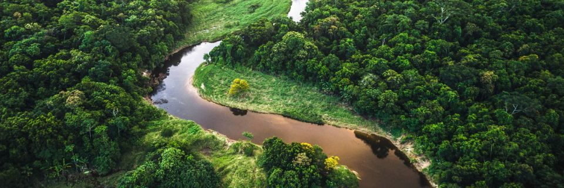

Sobre Nós

Formare Florestal: Especialistas em Recuperação de Áreas Degradadas
A Formare Florestal é uma empresa especializada em recuperação de áreas degradadas, que oferece soluções eficazes e de alta qualidade para projetos ambientais. Contamos com uma equipe altamente qualificada e experiente em recuperação de áreas degradadas, o que nos permite oferecer um serviço completo e eficiente.
Solução Completa para Recuperação de Áreas Degradadas
Diferentemente de muitas consultorias florestais que oferecem apenas planos, a Formare Florestal se destaca no mercado como uma solução completa e eficiente. Além de elaborar o plano, nossa empresa executa todas as etapas do projeto, desde o plantio até o monitoramento da área recuperada.
Conhecimentos e Habilidades Unidos para o Sucesso do Projeto
Nosso time trabalha de forma integrada, unindo conhecimentos e habilidades para garantir o sucesso de cada projeto de recuperação de áreas degradadas. Acreditamos que é possível recuperar áreas degradadas de forma eficiente e sustentável, contribuindo para a preservação do meio ambiente e promovendo o desenvolvimento econômico.
Melhores Práticas e Tecnologias para a Eficiência do Projeto
Na Formare Florestal, buscamos sempre as melhores práticas e tecnologias para nossos projetos de recuperação de áreas degradadas, garantindo a qualidade e eficiência em todas as etapas. Com anos de experiência em consultoria florestal e recuperação de áreas degradadas, nossa empresa oferece soluções completas e eficazes para nossos clientes.
Nosso Serviços

O que a Formare pode fazer por você?
Na Formare Florestal, oferecemos uma ampla gama de serviços de consultoria florestal e ambiental, com foco na recuperação de áreas degradadas. Com uma equipe altamente capacitada e experiente, garantimos que nossos clientes tenham soluções personalizadas e de alta qualidade.
Nossos principais serviços incluem:
- Recuperação de áreas degradadas: nosso foco principal é ajudar nossos clientes a restaurar áreas degradadas, utilizando técnicas de reflorestamento e recuperação do solo. Trabalhamos em estreita colaboração com nossos clientes para desenvolver planos personalizados que atendam às suas necessidades e objetivos. A recuperação de áreas degradadas é um processo complexo e que exige conhecimento técnico e prático, por isso, contamos com uma equipe de profissionais altamente qualificados que utilizam as melhores técnicas disponíveis para cada caso.
- Monitoramento de áreas recuperadas: após o plantio das mudas, realizamos monitoramentos periódicos para garantir que a área esteja se desenvolvendo conforme o esperado e para realizar ajustes, se necessário. O monitoramento é uma etapa fundamental do processo de recuperação de áreas degradadas, pois permite avaliar o sucesso do projeto e realizar intervenções para corrigir eventuais problemas.
- Consultoria ambiental e florestal: oferecemos consultoria especializada em questões ambientais e florestais para ajudar nossos clientes a atenderem as regulamentações e leis aplicáveis. Isso inclui a elaboração de planos de manejo florestal, planos de recuperação de áreas degradadas, laudos ambientais, entre outros. A consultoria é uma ferramenta importante para que nossos clientes possam atuar de forma sustentável e dentro da legislação vigente.
- Execução de projetos: a Formare Florestal é especializada na execução de projetos de recuperação de áreas degradadas, desde a preparação do solo até o plantio das mudas e monitoramento subsequente. Isso garante a efetivação do plano elaborado e um resultado final satisfatório para o cliente. Nossa equipe conta com profissionais experientes em todas as etapas do processo de recuperação de áreas degradadas, o que garante a qualidade e eficiência do serviço prestado.
Todas as nossas atividades são realizadas com ética, transparência e comprometimento, garantindo assim a satisfação dos nossos clientes e o sucesso dos seus projetos de recuperação de áreas degradadas.
Clientes

Nós da Formare Florestal temos como principal objetivo ajudar nossos clientes a cumprir com suas obrigações ambientais e recuperar áreas degradadas de forma eficiente e responsável. Atendemos uma ampla variedade de clientes, desde consultorias ambientais e florestais até escritórios de advocacia e contabilidade que buscam oferecer aos seus clientes soluções ambientais confiáveis e eficientes.
Também atendemos pessoas físicas e jurídicas que precisam recompor áreas degradadas em suas propriedades, construtoras que buscam regularizar suas atividades e promover ações de compensação ambiental, e órgãos públicos que necessitam de apoio técnico para a recuperação de áreas degradadas.
Independentemente do tipo de cliente, garantimos um atendimento personalizado e um trabalho de alta qualidade, com acompanhamento e monitoramento constante dos processos de recuperação. Nossa equipe é formada por profissionais experientes e capacitados, que estão sempre atualizados com as mais recentes técnicas e tecnologias em recuperação ambiental.
Na Formare Florestal, acreditamos que a recuperação de áreas degradadas é um processo importante e necessário, não só para o cumprimento das obrigações ambientais, mas também para a conservação da biodiversidade e a promoção do desenvolvimento sustentável. É com essa visão que atendemos nossos clientes, buscando sempre alcançar os melhores resultados e deixar um legado positivo para as futuras gerações.
O que é PRAD?

O que é a recuperação de áreas degradadas?
As áreas degradadas são aquelas que sofreram alterações significativas em sua estrutura original, seja pela ação humana ou por causas naturais, resultando em perda de sua capacidade produtiva e de sua biodiversidade. A recuperação dessas áreas é um processo que visa restabelecer sua funcionalidade ecológica e seu potencial produtivo, por meio da implementação de técnicas e estratégias adequadas.
A recuperação de áreas degradadas é uma atividade fundamental para a manutenção da biodiversidade e da qualidade do meio ambiente. Além disso, a recuperação dessas áreas pode trazer benefícios econômicos, sociais e culturais para as comunidades locais, como a criação de empregos, a geração de renda e a melhoria da qualidade de vida.
O objetivo da recuperação de áreas degradadas é promover a recuperação das funções ecológicas dessas áreas, restaurando a biodiversidade, o solo, a água e o ar, e reestabelecendo a capacidade produtiva. Para isso, são utilizadas técnicas e estratégias específicas, como a revegetação, a adubação verde, a bioengenharia e a recuperação de nascentes, entre outras.
A recuperação de áreas degradadas é um processo complexo que exige conhecimento técnico, planejamento e gestão adequados. Por isso, é importante contar com profissionais capacitados e experientes na área, que possam oferecer soluções eficazes e sustentáveis para cada tipo de ambiente degradado.

Técnicas de recuperação de áreas degradadas
A recuperação de áreas degradadas é um processo que envolve a restauração de áreas que foram prejudicadas por atividades humanas ou desastres naturais. Existem diversas técnicas que podem ser utilizadas na recuperação dessas áreas, com o objetivo de restabelecer a sua funcionalidade ecológica e promover a sua regeneração.
Entre as principais técnicas de recuperação de áreas degradadas, podemos destacar:
- Reflorestamento: a plantação de árvores é uma das técnicas mais utilizadas na recuperação de áreas degradadas. O reflorestamento é importante para a restauração da cobertura vegetal, que ajuda na retenção da água e na conservação do solo.
- Bioengenharia: a bioengenharia é uma técnica que utiliza a vegetação para estabilizar solos e encostas. Essa técnica inclui a utilização de técnicas de engenharia em conjunto com a vegetação, como a construção de muros vegetados, enrocamentos vegetados, entre outras.
- Manejo integrado do solo e água: o manejo integrado do solo e água envolve a utilização de práticas agrícolas sustentáveis, como a rotação de culturas, a utilização de adubos orgânicos, a conservação do solo e a retenção de água.
- Biorremediação: a biorremediação é uma técnica que utiliza microrganismos e plantas para remover contaminantes do solo e da água. Essa técnica é especialmente importante em áreas contaminadas por substâncias químicas, como áreas de mineração.
- Hidrossemeadura: a hidrossemeadura é uma técnica que utiliza sementes, fertilizantes e outros insumos agrícolas para promover o crescimento da vegetação em áreas degradadas. A técnica é especialmente útil em áreas que precisam ser recuperadas rapidamente.
Essas são apenas algumas das técnicas que podem ser utilizadas na recuperação de áreas degradadas. Cada técnica tem suas vantagens e desvantagens, e a escolha da técnica mais adequada deve levar em conta as características da área degradada e os objetivos da recuperação.

Processo de recuperação de áreas degradadas
O processo de recuperação de áreas degradadas envolve uma série de etapas que devem ser realizadas com o objetivo de restaurar a área degradada e torná-la novamente produtiva e saudável para o meio ambiente. As principais etapas desse processo são:
- Diagnóstico da área degradada: Antes de iniciar o processo de recuperação, é importante fazer uma análise detalhada da área degradada, avaliando suas condições físicas, químicas e biológicas. Dessa forma, é possível identificar as principais causas da degradação e definir as técnicas mais adequadas para a sua recuperação.
- Planejamento da recuperação: Com base no diagnóstico da área degradada, é elaborado um plano de recuperação que define as estratégias e técnicas que serão utilizadas para restaurar a área. Esse plano leva em consideração fatores como o tipo de solo, a vegetação local, as condições climáticas e os objetivos da recuperação.
- Preparação do solo: A preparação do solo consiste em uma série de atividades que visam melhorar as condições físicas e químicas do solo, como a remoção de resíduos e entulhos, a correção do pH, a adição de nutrientes e a compactação do solo.
- Implantação das técnicas de recuperação: A implantação das técnicas de recuperação envolve a escolha e aplicação das técnicas mais adequadas para cada caso. Isso pode incluir o plantio de mudas de espécies nativas, a utilização de técnicas de bioengenharia, a aplicação de técnicas de biorremediação, entre outras.
- Monitoramento e manutenção: Após a implantação das técnicas de recuperação, é importante fazer o monitoramento da área para avaliar a eficácia das técnicas e identificar eventuais problemas que possam surgir. Além disso, é necessário fazer a manutenção da área, realizando atividades como a poda de árvores, a irrigação e o controle de pragas e doenças.
Com o cumprimento de todas essas etapas, é possível realizar a recuperação de áreas degradadas e promover a restauração ambiental, contribuindo para a preservação da biodiversidade e a proteção do meio ambiente.

Benefícios da recuperação de áreas degradadas
A recuperação de áreas degradadas traz inúmeros benefícios ambientais e sociais. Confira abaixo os principais:
- Restauração da biodiversidade: áreas degradadas são frequentemente locais destruídos e sem vida, mas com a recuperação adequada, pode-se restaurar a diversidade de fauna e flora, ajudando a preservar a rica biodiversidade brasileira.
- Melhoria da qualidade do solo e da água: a recuperação de áreas degradadas ajuda a melhorar a qualidade do solo e da água, reduzindo os impactos negativos causados pela poluição e pela utilização intensiva de recursos naturais.
- Redução da erosão: a recuperação de áreas degradadas também contribui para a redução da erosão do solo, minimizando os impactos causados pelas chuvas e prevenindo a formação de processos erosivos, como voçorocas e ravinas.
- Sequestro de carbono: a recuperação de áreas degradadas contribui para o sequestro de carbono, ajudando a mitigar as mudanças climáticas.
- Recuperação de áreas degradadas para uso econômico sustentável: a recuperação de áreas degradadas pode contribuir para a produção de madeira, frutos, plantas medicinais, entre outros produtos, além de oferecer oportunidades de ecoturismo e educação ambiental.

Como contratar os serviços de recuperação de áreas degradadas da Formare Florestal?
Ao decidir contratar os serviços de recuperação de áreas degradadas da Formare Florestal, é importante seguir alguns passos para garantir que o processo ocorra de maneira eficiente e satisfatória. Confira abaixo o passo a passo:
-
Contato com a empresa: O primeiro passo é entrar em contato com a Formare Florestal através dos canais de comunicação disponíveis no site, como e-mail, telefone ou formulário de contato.
-
Agendamento de uma visita técnica: Após o contato inicial, a equipe técnica da Formare Florestal realizará uma visita técnica à área degradada para avaliar as condições e necessidades do projeto.
-
Elaboração de um orçamento: Com base nas informações coletadas durante a visita técnica, a equipe da Formare Florestal elaborará um orçamento detalhado, que contemplará todas as etapas do projeto, desde o planejamento até a execução e monitoramento.
-
Fechamento do contrato: Após a aprovação do orçamento, será realizado o fechamento do contrato, que estabelecerá as condições de pagamento e os prazos para a execução do projeto.
-
Execução do projeto de recuperação de áreas degradadas: Com o contrato fechado, a equipe da Formare Florestal iniciará a execução do projeto de recuperação da área degradada, utilizando as técnicas mais adequadas para cada caso e sempre respeitando as normas ambientais.
É importante destacar que durante todo o processo de contratação dos serviços de recuperação de áreas degradadas da Formare Florestal, a equipe técnica estará disponível para esclarecer quaisquer dúvidas e garantir a transparência e eficiência do serviço prestado.
CONTATE AGORA MESMO